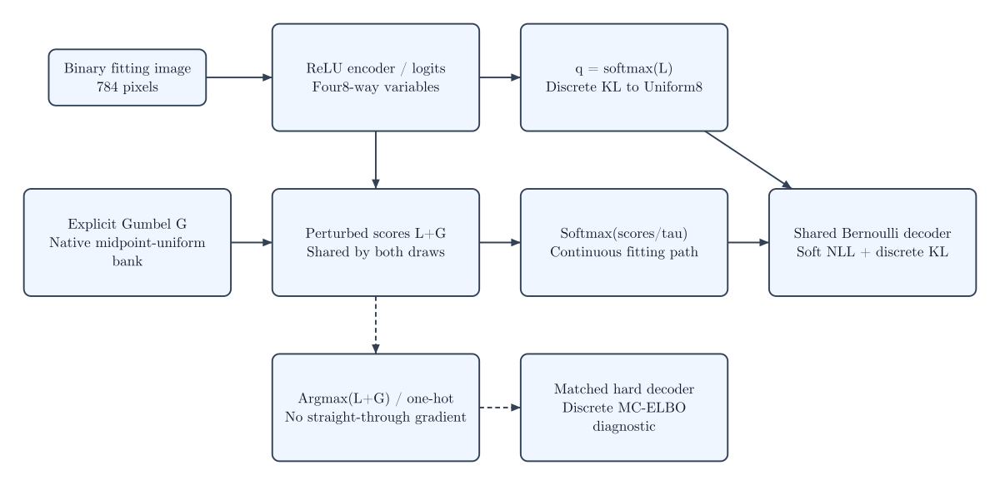
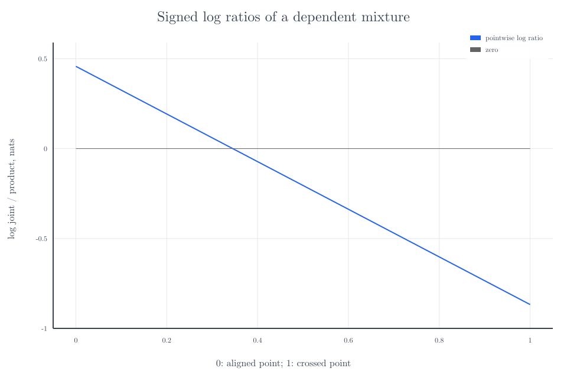
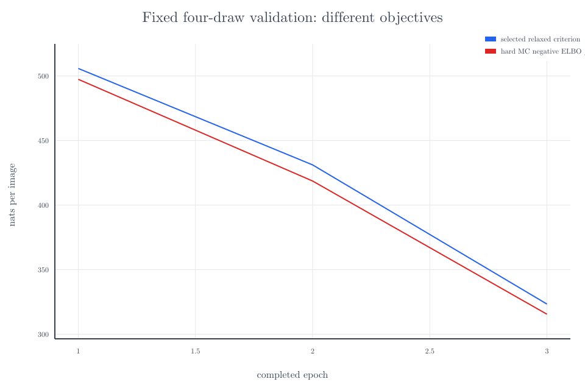
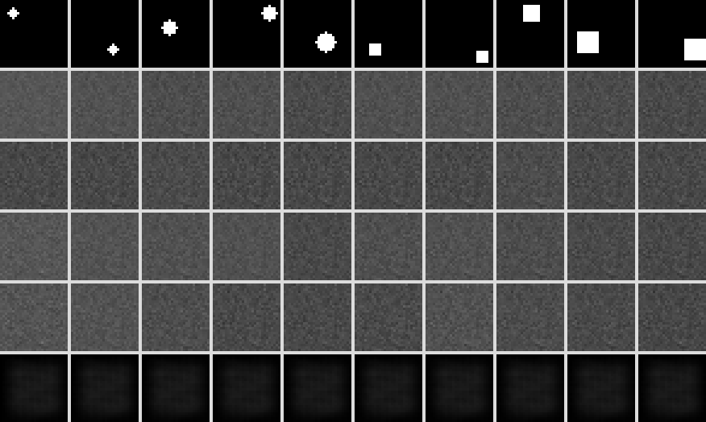
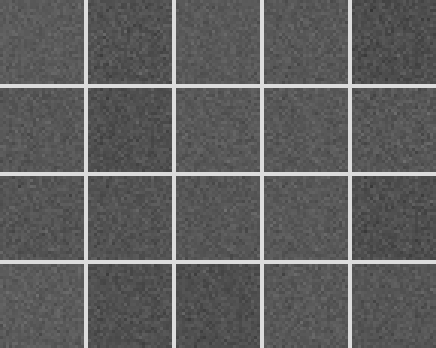

A Categorical VAE with Explicit Gumbel-Softmax Samples
Abstract
Categorical latent variables have discrete samples, so their reconstruction path has no ordinary argmax derivative. A Gumbel-softmax relaxation supplies a continuous training path while retaining matched hard samples for diagnosis. This report derives that distinction, checks all score/noise partials and calibrates4,096 hard draws, then fits four8-way variables on294 unique binary circle/square images. Twenty-one visible Adam updates and fixed four-draw validation select epoch3 at temperature0.7. Heldout soft NLL321.932 plus discrete KL3.116 gives surrogate325.048; the matched hard Monte Carlo negative ELBO is316.523nats/image. Decode(q) and MAP MSE0.11473/ 0.10366 are worse than the fitting mean0.04855. Unfiltered soft/hard pairs and all20 uniform prior codes retain that limitation. The relaxed objective is a biased continuous surrogate, not an exact discrete ELBO or a KL between Concrete densities.
Categorical probabilities, relaxed draws and hard samples
[Jang, Gu and Poole's Gumbel-Softmax](https://arxiv.org/abs/1611.01144) and [Maddison, Mnih and Teh's Concrete distribution](https://arxiv.org/abs/1611.00712) replace a one-hot categorical draw by a differentiable simplex-valued relaxation. For logits L, supplied independent midpoint uniforms U in(0,1), Gumbels G=−log(−log U), and positive temperature tau,
Hard Gumbel-max gives actual categorical samples. Lower temperature sharpens the soft sample, but the hard argmax is unchanged. No straight-through estimator is used here: the decoder trains on soft Y, and hard one-hot decoding is a separate diagnostic. Sampling never occurs inside a model forward. All noise banks, including Float64 uniforms/Gumbels and Float32 casts, are explicit native C++ artifacts.
#include <dm/dm.hpp>
int main() {
std::filesystem::create_directories("build");
dm::graphics::Diagram d(52, 1200);
dm::graphics::DiagramNodeStyle wide;
wide.width = 5;
wide.height = 2.6;
dm::graphics::DiagramStroke dash;
dash.arrow = true;
dash.dashed = true;
d.node("x", {0, 0}, "Binary fitting image\n784 pixels")
.node("L", {6, 0}, "ReLU encoder / logits\nFour8-way variables", wide)
.node("q", {12, 0}, "q = softmax(L)\nDiscrete KL to Uniform8", wide)
.node("g", {0, -4}, "Explicit Gumbel G\nNative midpoint-uniform bank", wide)
.node("scores", {6, -4}, "Perturbed scores L+G\nShared by both draws", wide)
.node("y", {12, -4}, "Softmax(scores/tau)\nContinuous fitting path", wide)
.node("dec", {18, -4}, "Shared Bernoulli decoder\nSoft NLL + discrete KL", wide)
.node("ids", {6, -8}, "Argmax(L+G) / one-hot\nNo straight-through gradient", wide)
.node("hard", {12, -8}, "Matched hard decoder\nDiscrete MC-ELBO diagnostic", wide)
.edge("x", "L")
.edge("L", "q")
.edge("L", "scores")
.edge("g", "scores")
.edge("scores", "y")
.edge("y", "dec")
.edge("q", "dec")
.edge("scores", "ids", "", dash)
.edge("ids", "hard", "", dash)
.save_svg("build/gumbel_method.svg");
}
A hand-checkable draw and its derivatives
For L=[.1,−.4,.7] and G=[.3,−.2,.6], hard index2 wins for every positive temperature. At tau=.25 the soft sample is sharp; at tau2 it is diffuse. q remains unchanged. The softmax Jacobian and the discrete uniform-prior KL are
For A=0.5 sum(Y²)+0.3K, let S=sum(Y²). Then dA/dG_j=Y_j(Y_j−S)/tau, and dA/dL_j adds0.3q_j[log(Cq_j)−K]. The discrete KL uses q and stable log_softmax(L), not log of an underflowed q. A zero probability times its finite log-softmax value contributes zero. Float32 uses source-rounded temperature and log C. Small negative KL roundoff is not clipped.
#include <dm/dm.hpp>
int main() {
namespace n = dm::nn;
const auto t = n::DType::Float64;
auto L = n::tensor({.1, -.4, .7}, {1, 3}, t), G = n::tensor({.3, -.2, .6}, {1, 3}, t);
auto chart = dm::graphics::RPlot::create();
for (double tau : {.25, .7, 2.}) {
const auto o = n::models::GumbelCategorical(L, G, tau);
if (o.indices.item<std::int64_t>() != 2)
return 1;
auto y = o.relaxed.to_vector<double>();
chart.lines(
{0, 1, 2},
y,
"tau=" + std::to_string(tau),
tau == .25 ? dm::RGBA{37, 99, 235}
: tau == .7 ? dm::RGBA{220, 38, 38}
: dm::RGBA{22, 163, 74},
2);
std::print(
"tau {:.2f}: relaxed {}; hard2; q {}.\n",
tau,
o.relaxed.values_str(),
o.probability.values_str());
}
chart.title("One explicit Gumbel draw / three temperatures")
.x_label("category index")
.y_label("relaxed simplex coordinate")
.save_svg("build/gumbel_hand.svg");
}tau 0.25: relaxed [[0.026584, 0.000486904, 0.972929]]; hard2; q [[0.29166, 0.176901, 0.531439]]. tau 0.70: relaxed [[0.205893, 0.0493424, 0.744765]]; hard2; q [[0.29166, 0.176901, 0.531439]]. tau 2.00: relaxed [[0.314976, 0.191043, 0.493981]]; hard2; q [[0.29166, 0.176901, 0.531439]].

The following complete check saves both rows of hand values, all twelve logits/Gumbel partials, extreme logits, and4,096 calibration draws for q=[.2,.3,.5]. A local MT19937 word r gives U=(double(r)+.5)/2^32, avoiding exact0/1 without clipping; G=−log(−log U). Calibration checks hard counts within six binomial standard deviations. This is a finite sampling sanity check, not a formal proof or a learned-model quality test.
#include <dm/dm.hpp>
namespace nn = dm::nn;
void Require(bool condition, const std::string& why) {
if (!condition)
throw std::runtime_error(why);
}
void Near(double x, double y, double tolerance, const std::string& why) {
Require(std::abs(x - y) <= tolerance, why);
}
struct BetaFactorData {
nn::Tensor images, factors, source;
};
nn::Tensor Flatten(const nn::Tensor& t) {
return nn::reshape(t, {t.size(0), 784});
}
nn::Tensor Find(const nn::NamedTensors& a, const std::string& key) {
for (const auto& [k, v] : a)
if (k == key)
return v;
throw std::runtime_error(key);
}
std::vector<float> Bytes(const nn::Tensor& t) {
return t.contiguous().to_vector<float>();
}
nn::NamedTensors Arrays(const nn::ParameterStore& p) {
nn::NamedTensors a;
for (const auto& k : p.names())
a.emplace_back(k, p.at(k).detach().clone());
return a;
}
auto Snapshot(const nn::ParameterStore& p) {
return p.flatten();
}
nn::NamedTensors CheckGradients(
const nn::ParameterStore& p,
const std::vector<nn::Tensor>& gs,
const std::string&,
const std::string&) {
nn::NamedTensors a;
Require(gs.size() == p.size(), "all10 gradients");
const auto names = p.names();
for (std::size_t i = 0; i < gs.size(); ++i) {
double norm = 0;
for (double x : gs[i].to_vector<double>()) {
Require(std::isfinite(x), "finite derivatives");
norm += x * x;
}
Require(norm > 0, "nonzero derivative in each tensor");
a.emplace_back(names[i], gs[i]);
}
return a;
}
using GumbelNoiseBank = nn::models::GumbelNoiseBank;
GumbelNoiseBank GumbelNoise(std::int64_t n, std::int64_t samples, std::uint32_t seed) {
return nn::models::GumbelNoise(n, samples, seed);
}
nn::Tensor GumbelNoiseAt(const GumbelNoiseBank& bank, int k) {
Require(k >= 0 && k < bank.noise.size(0), "available Gumbel draw");
return nn::select(bank.noise, 0, k).contiguous();
}
nn::NamedTensors Evaluate(
nn::ParameterStore& p,
float temperature,
const nn::Tensor& images,
const nn::Tensor& noise) {
nn::NoGradGuard guard;
const auto o = nn::models::GumbelCategoricalAutoencoder(p, Flatten(images), noise, temperature);
nn::NamedTensors fields{
{"logits", o.logits},
{"log_probability", o.log_probability},
{"probability", o.probability},
{"relaxed", o.relaxed},
{"indices", o.indices},
{"hard", o.hard},
{"soft_prediction", o.soft_prediction},
{"hard_prediction", o.hard_prediction},
{"nll", o.nll},
{"hard_nll", o.hard_nll},
{"kl", o.kl},
{"loss", o.loss},
{"hard_objective", o.hard_objective}};
for (auto& [name, t] : fields) {
t = t.contiguous();
for (double v : t.to_vector<double>())
Require(std::isfinite(v), "finite categorical endpoint");
}
return fields;
}
nn::Tensor DecodeSoft(nn::ParameterStore& p, const nn::Tensor& code) {
nn::NoGradGuard guard;
return nn::models::GumbelDecodeSoft(p, code).contiguous();
}
nn::Tensor Decode(nn::ParameterStore& p, const nn::Tensor& ids) {
nn::NoGradGuard guard;
return nn::models::GumbelDecodeIds(p, ids).contiguous();
}
std::vector<double> GumbelScore(
nn::ParameterStore& p,
float temperature,
const nn::Tensor& images,
const GumbelNoiseBank& bank) {
double soft = 0, hard = 0, kl = 0;
const auto n = images.size(0), samples = bank.noise.size(0);
for (int k = 0; k < samples; ++k) {
auto f = Evaluate(p, temperature, images, GumbelNoiseAt(bank, k));
auto a = Find(f, "nll").to_vector<float>(), b = Find(f, "hard_nll").to_vector<float>(),
c = Find(f, "kl").to_vector<float>();
for (int row = 0; row < n; ++row) {
soft += a[row];
hard += b[row];
if (k == 0)
kl += c[row];
}
}
soft /= double(n * samples);
hard /= double(n * samples);
kl /= double(n);
return {soft, hard, kl, soft + kl};
}
double MaxAbsDiff(const nn::Tensor& a, const nn::Tensor& b, int n) {
const auto x = Bytes(a), y = Bytes(b);
double d = 0;
for (int i = 0; i < n; ++i)
d = std::max(d, std::abs(double(x[i]) - y[i]));
return d;
}
double Mse(const nn::Tensor& a, const nn::Tensor& b) {
return nn::mean(
nn::square(
nn::cast(Flatten(a), nn::DType::Float64) -
nn::cast(Flatten(b), nn::DType::Float64)))
.item();
}
nn::Tensor PixelMean(const nn::Tensor& images) {
const auto v = Flatten(images).to_vector<float>();
std::vector<float> mean(784);
for (int j = 0; j < 784; ++j) {
double total = 0;
for (int b = 0; b < images.size(0); ++b)
total += v[b * 784 + j];
mean[j] = float(total / double(images.size(0)));
}
return nn::from_vector(mean, {784});
}
nn::Tensor Constant(const nn::Tensor& row, int count) {
return nn::broadcast_to(nn::reshape(row, {1, 784}), {count, 784}).contiguous();
}
void Checks(const std::filesystem::path& root) {
const std::vector<float> lv{.1f, -.4f, .7f, .2f, .6f, -.3f}, nv{.3f, -.2f, .6f, -.1f, .4f, .2f};
auto L = nn::from_vector(lv, {2, 3}).requires_grad_(),
G = nn::from_vector(nv, {2, 3}).requires_grad_();
auto a = nn::models::GumbelCategorical(L, G, .7f),
cold = nn::models::GumbelCategorical(L, G, .25f),
warm = nn::models::GumbelCategorical(L, G, 2.f);
auto kl = nn::models::CategoricalUniformKl(a.probability, a.log_probability);
auto objective = 0.5 * nn::sum(nn::square(a.relaxed)) + 0.3 * nn::sum(kl, {0});
auto gradients = nn::grad(objective, {L, G});
nn::Tensor extreme_kl;
{
auto extreme = nn::models::GumbelCategorical(
nn::tensor({{100.f, -100.f, 0.f}, {-100.f, 0.f, 100.f}}), nn::zeros({2, 3}), .7f);
extreme_kl = nn::models::CategoricalUniformKl(extreme.probability, extreme.log_probability);
}
auto calibration = nn::models::GumbelNoise(4096, 1, 2999, 1, 3);
auto calibration_noise = nn::reshape(calibration.noise, {4096, 3}),
uniform = nn::reshape(calibration.uniform, {4096, 3}),
gumbel = nn::reshape(calibration.gumbel, {4096, 3});
auto sampled = nn::models::GumbelCategorical(
nn::tensor({{float(std::log(.2)), float(std::log(.3)), float(std::log(.5))}}),
calibration_noise,
.7f);
auto ia = nn::cast(a.indices, nn::DType::Int32), ic = nn::cast(cold.indices, nn::DType::Int32),
iw = nn::cast(warm.indices, nn::DType::Int32);
Require(
Bytes(ic) == Bytes(iw) && Bytes(ia) == Bytes(ic),
"hard Gumbel-max samples independent of positive temperature");
const auto q_out = a.probability.to_vector<float>(), y_out = a.relaxed.to_vector<float>(),
k_out = kl.to_vector<float>(), dl = gradients[0].to_vector<float>(),
dg = gradients[1].to_vector<float>(), ek = extreme_kl.to_vector<float>();
for (int b = 0; b < 2; ++b) {
double q[3], y[3], zq = 0, zy = 0;
for (int j = 0; j < 3; ++j) {
q[j] = std::exp(lv[b * 3 + j]);
y[j] = std::exp((lv[b * 3 + j] + nv[b * 3 + j]) / .7);
zq += q[j];
zy += y[j];
}
double k = 0, yy = 0;
for (int j = 0; j < 3; ++j) {
q[j] /= zq;
y[j] /= zy;
k += q[j] * std::log(q[j] * 3);
yy += y[j] * y[j];
Near(q_out[b * 3 + j], q[j], 2e-7, "normalized categorical q");
Near(y_out[b * 3 + j], y[j], 2e-7, "known relaxed draw");
}
Near(k_out[b], k, 2e-7, "known KL to categorical uniform");
for (int j = 0; j < 3; ++j) {
const double rec = y[j] * (y[j] - yy) / .7, posterior = .3 * q[j] * (std::log(q[j] * 3) - k);
Near(
dl[b * 3 + j],
rec + posterior,
3e-7,
"all six score derivatives include sampled reconstruction and KL");
Near(dg[b * 3 + j], rec, 3e-7, "all six Gumbel derivatives exclude posterior KL");
}
Require(ek[b] <= std::log(3.) + 1e-6, "extreme categorical KL bounded and finite");
}
const auto sampled_ids = nn::cast(sampled.indices, nn::DType::Int32).contiguous();
std::vector<int> counts(3, 0);
for (int id : sampled_ids.to_vector<int>())
++counts[id];
for (int j = 0; j < 3; ++j) {
const double target = j == 0 ? .2 : j == 1 ? .3 : .5;
Require(
std::abs(counts[j] - 4096 * target) < 6 * std::sqrt(4096 * target * (1 - target)) + 1,
"4096Gumbel-max draws follow known categorical distribution within6sigma");
}
nn::save_npz(
(root / "categorical_algebra.npz").string(),
{{"logits", L.detach()},
{"noise", G.detach()},
{"probability", a.probability},
{"relaxed", a.relaxed},
{"indices", ia},
{"kl", kl},
{"dlogits", gradients[0]},
{"dnoise", gradients[1]},
{"cold", cold.relaxed},
{"warm", warm.relaxed},
{"extreme_kl", extreme_kl},
{"calibration_uniform", uniform},
{"calibration_gumbel", gumbel},
{"calibration_noise", calibration_noise},
{"calibration_indices", sampled_ids},
{"calibration_counts", nn::from_vector(counts, {3})}});
std::cout << "categorical probabilities/KL/ALL12score+Gumbel partials/temperature "
"invariance/extremes/4096calibration "
"draws passed"
<< std::endl;
}
int main() {
std::filesystem::create_directories("build/gumbel_vae");
Checks("build/gumbel_vae");
}categorical probabilities/KL/ALL12score+Gumbel partials/temperature invariance/extremes/4096calibration draws passed
A relaxed likelihood with a discrete prior penalty
The network is784→32ReLU→32 logits, reshaped to four8-way categorical variables. Flattened soft or one-hot codes have32 entries, decoded through32→32ReLU→784 logits with shared weights. Eight tensors hold53,104 scalars. Ordinary Glorot-uniform weights and zero biases are created in encoder, categorical, decoder, output order, seed2903. No image-to-decoder skip exists. For a binary image x and Bernoulli decoder logits a(Y),
This mixes a soft likelihood with *discrete* KL: a biased continuous surrogate. It is not an exact discrete ELBO or KL between Concrete densities. The separate diagnostic replaces Y by matched actual one-hot categorical samples H, giving Monte Carlo discrete negative ELBO=mean(R_hard+K). It is not used to train or select. At finite temperature the soft/hard likelihoods differ; no straight-through gradient silently changes the fitting objective. Temperature stays at.7 (Float32 .69999998807907104), with no annealing.
Native known-factor data, explicit fitting and validation
Native beta-vae-assets preparation generates294 unique binary28×28 circle/square images: shape2×size3×x7×y7. The deterministic residue split gives210 fit,42 validation and42 test records. IDs are disjoint; the independent checker regenerates every source/factor assignment and all230,496 pixels. Factors enter neither fitting nor selection. This is a teaching lattice, not a reproduction of either paper's benchmark.
#include <dm/dm.hpp>
int main() {
namespace n = dm::nn;
std::filesystem::create_directories("build/gumbel_vae");
const std::filesystem::path cache = dm::datasets::data_home();
dm::datasets::prepare_example_data("beta-vae-assets", cache.string());
auto data = n::load_npz((cache / "beta_vae/factors.npz").string());
std::set<int> ids;
std::set<std::vector<int>> pixels;
for (auto& [name, value] : data) {
if (name.ends_with("_images")) {
for (int i = 0; i < value.size(0); ++i)
if (!pixels.insert(n::select(value, 0, i).to_vector<int>()).second)
return 1;
value = n::cast(value, n::DType::Float32);
}
if (name.ends_with("_source_ids"))
for (int id : value.to_vector<int>())
if (!ids.insert(id).second)
return 1;
}
if (ids.size() != 294 || pixels.size() != 294)
return 1;
n::save_npz("build/gumbel_vae/data.npz", data);
std::filesystem::copy_file(
cache / "beta_vae/manifest.json",
"build/gumbel_vae/data_manifest.json",
std::filesystem::copy_options::overwrite_existing);
std::print("294 unique binary images and source IDs; fit210, validation42, test42.\n");
}294 unique binary images and source IDs; fit210, validation42, test42.
BatchOrder(210,32,2917) gives seven updates per epoch, including a final18-row batch,21 in three epochs. Adam uses learning rate.003, moments.9/.999 and epsilon1e-8. Fresh training banks use seeds2970/2971/2972. Fixed four-draw banks use fit2927, validation2939 and test2953; Float64 uniform/Gumbel values and Float32 casts are saved. Every forward receives its noise.
Only completed epochs1–3 are eligible. Four fixed validation *soft* NLL draws plus analytic discrete KL select the checkpoint. Accumulation visits draw then image in Float64 from Float32 per-row values; KL is counted once. Hard NLL is diagnostic, and no test data select an epoch. The full program below leaves each forward, gradient request and optimizer step visible, saves initial/first-gradient/first-update/all-epoch/selected arrays, restores into a fresh store and checks fixed/changed noise, simplex sums, invalid codes, single/batch parity and inference immutability. Helpers contain I/O and metric aggregation, with no fitting loop.
#include <dm/dm.hpp>
namespace nn = dm::nn;
void Require(bool condition, const std::string& why) {
if (!condition)
throw std::runtime_error(why);
}
void Near(double x, double y, double tolerance, const std::string& why) {
Require(std::abs(x - y) <= tolerance, why);
}
struct BetaFactorData {
nn::Tensor images, factors, source;
};
nn::Tensor Flatten(const nn::Tensor& t) {
return nn::reshape(t, {t.size(0), 784});
}
nn::Tensor Find(const nn::NamedTensors& a, const std::string& key) {
for (const auto& [k, v] : a)
if (k == key)
return v;
throw std::runtime_error(key);
}
std::vector<float> Bytes(const nn::Tensor& t) {
return t.contiguous().to_vector<float>();
}
nn::NamedTensors Arrays(const nn::ParameterStore& p) {
nn::NamedTensors a;
for (const auto& k : p.names())
a.emplace_back(k, p.at(k).detach().clone());
return a;
}
auto Snapshot(const nn::ParameterStore& p) {
return p.flatten();
}
nn::NamedTensors CheckGradients(
const nn::ParameterStore& p,
const std::vector<nn::Tensor>& gs,
const std::string&,
const std::string&) {
nn::NamedTensors a;
Require(gs.size() == p.size(), "all10 gradients");
const auto names = p.names();
for (std::size_t i = 0; i < gs.size(); ++i) {
double norm = 0;
for (double x : gs[i].to_vector<double>()) {
Require(std::isfinite(x), "finite derivatives");
norm += x * x;
}
Require(norm > 0, "nonzero derivative in each tensor");
a.emplace_back(names[i], gs[i]);
}
return a;
}
using GumbelNoiseBank = nn::models::GumbelNoiseBank;
GumbelNoiseBank GumbelNoise(std::int64_t n, std::int64_t samples, std::uint32_t seed) {
return nn::models::GumbelNoise(n, samples, seed);
}
nn::Tensor GumbelNoiseAt(const GumbelNoiseBank& bank, int k) {
Require(k >= 0 && k < bank.noise.size(0), "available Gumbel draw");
return nn::select(bank.noise, 0, k).contiguous();
}
nn::NamedTensors Evaluate(
nn::ParameterStore& p,
float temperature,
const nn::Tensor& images,
const nn::Tensor& noise) {
nn::NoGradGuard guard;
const auto o = nn::models::GumbelCategoricalAutoencoder(p, Flatten(images), noise, temperature);
nn::NamedTensors fields{
{"logits", o.logits},
{"log_probability", o.log_probability},
{"probability", o.probability},
{"relaxed", o.relaxed},
{"indices", o.indices},
{"hard", o.hard},
{"soft_prediction", o.soft_prediction},
{"hard_prediction", o.hard_prediction},
{"nll", o.nll},
{"hard_nll", o.hard_nll},
{"kl", o.kl},
{"loss", o.loss},
{"hard_objective", o.hard_objective}};
for (auto& [name, t] : fields) {
t = t.contiguous();
for (double v : t.to_vector<double>())
Require(std::isfinite(v), "finite categorical endpoint");
}
return fields;
}
nn::Tensor DecodeSoft(nn::ParameterStore& p, const nn::Tensor& code) {
nn::NoGradGuard guard;
return nn::models::GumbelDecodeSoft(p, code).contiguous();
}
nn::Tensor Decode(nn::ParameterStore& p, const nn::Tensor& ids) {
nn::NoGradGuard guard;
return nn::models::GumbelDecodeIds(p, ids).contiguous();
}
std::vector<double> GumbelScore(
nn::ParameterStore& p,
float temperature,
const nn::Tensor& images,
const GumbelNoiseBank& bank) {
double soft = 0, hard = 0, kl = 0;
const auto n = images.size(0), samples = bank.noise.size(0);
for (int k = 0; k < samples; ++k) {
auto f = Evaluate(p, temperature, images, GumbelNoiseAt(bank, k));
auto a = Find(f, "nll").to_vector<float>(), b = Find(f, "hard_nll").to_vector<float>(),
c = Find(f, "kl").to_vector<float>();
for (int row = 0; row < n; ++row) {
soft += a[row];
hard += b[row];
if (k == 0)
kl += c[row];
}
}
soft /= double(n * samples);
hard /= double(n * samples);
kl /= double(n);
return {soft, hard, kl, soft + kl};
}
double MaxAbsDiff(const nn::Tensor& a, const nn::Tensor& b, int n) {
const auto x = Bytes(a), y = Bytes(b);
double d = 0;
for (int i = 0; i < n; ++i)
d = std::max(d, std::abs(double(x[i]) - y[i]));
return d;
}
double Mse(const nn::Tensor& a, const nn::Tensor& b) {
return nn::mean(
nn::square(
nn::cast(Flatten(a), nn::DType::Float64) -
nn::cast(Flatten(b), nn::DType::Float64)))
.item();
}
nn::Tensor PixelMean(const nn::Tensor& images) {
const auto v = Flatten(images).to_vector<float>();
std::vector<float> mean(784);
for (int j = 0; j < 784; ++j) {
double total = 0;
for (int b = 0; b < images.size(0); ++b)
total += v[b * 784 + j];
mean[j] = float(total / double(images.size(0)));
}
return nn::from_vector(mean, {784});
}
nn::Tensor Constant(const nn::Tensor& row, int count) {
return nn::broadcast_to(nn::reshape(row, {1, 784}), {count, 784}).contiguous();
}
int main() {
const std::filesystem::path root = "build/gumbel_vae";
const int epochs = 3;
const float temperature = .7f;
const auto data = nn::load_npz((root / "data.npz").string());
std::vector<BetaFactorData> pools;
for (const std::string split : {"fit", "validation", "test"})
pools.push_back(
{Find(data, split + "_images"),
Find(data, split + "_factors"),
Find(data, split + "_source_ids")});
std::vector<GumbelNoiseBank> noise{
GumbelNoise(210, 4, 2927), GumbelNoise(42, 4, 2939), GumbelNoise(42, 4, 2953)},
training;
nn::NamedTensors fixed;
for (int i = 0; i < 3; ++i) {
const std::string split = i == 0 ? "fit" : i == 1 ? "validation" : "test";
fixed.emplace_back(split + "_uniform", noise[i].uniform);
fixed.emplace_back(split + "_gumbel", noise[i].gumbel);
fixed.emplace_back(split + "_noise", noise[i].noise);
}
nn::save_npz((root / "fixed_noise.npz").string(), fixed);
for (int epoch = 1; epoch <= epochs; ++epoch) {
training.push_back(GumbelNoise(210, 1, 2969 + epoch));
nn::save_npz(
(root / ("train_noise_epoch" + std::to_string(epoch) + ".npz")).string(),
{{"uniform", training.back().uniform},
{"gumbel", training.back().gumbel},
{"noise", training.back().noise}});
}
nn::ParameterStore model(2903);
{
nn::NoGradGuard guard;
nn::models::GumbelCategoricalAutoencoder(
model, nn::zeros({1, 784}), nn::zeros({1, 4, 8}), temperature);
}
nn::OptimizerConfig config;
config.kind = nn::OptimizerKind::Adam;
nn::Optimizer optimizer(model, .003, config);
Require(
model.count() == 53104 && model.size() == 8, "four8-way compact categorical model census");
nn::save_npz((root / "initial_arrays.npz").string(), Arrays(model));
nn::BatchOrder order(210, 32, 2917);
std::ofstream history(root / "history.tsv"), batches(root / "batches.tsv");
history.precision(17);
history << "epoch\ttrain_preupdate_relaxed_objective\tvalidation_soft_nll\tvalidation_hard_"
"nll\tvalidation_"
"categorical_kl\tvalidation_relaxed_objective\n";
batches << "epoch\tstep\trow\tsource_id\n";
const auto fit_source = pools[0].source.to_vector<int>();
const auto best_path = (root / "best.npz").string();
double best = std::numeric_limits<double>::infinity();
int selected = 0, step = 0;
const auto started = std::chrono::steady_clock::now();
for (int epoch = 1; epoch <= epochs; ++epoch) {
order.begin_epoch();
auto bank = GumbelNoiseAt(training[epoch - 1], 0);
double sum = 0;
int seen = 0;
for (;;) {
auto rows = order.next();
if (rows.empty())
break;
auto images = nn::take_rows(pools[0].images, rows), gumbel = nn::take_rows(bank, rows);
if (step == 0) {
nn::save_npz((root / "first_batch.npz").string(), {{"images", images}, {"noise", gumbel}});
auto g = CheckGradients(
model,
nn::grad(
nn::models::GumbelCategoricalAutoencoder(
model, Flatten(images), gumbel, temperature)
.loss,
model.parameters()),
"all categorical gradients finite",
"all eight tensors receive pathwise+categoricalKL gradients");
nn::save_npz((root / "first_gradients.npz").string(), g);
nn::save_npz(
(root / "first_forward.npz").string(), Evaluate(model, temperature, images, gumbel));
}
const auto out =
nn::models::GumbelCategoricalAutoencoder(model, Flatten(images), gumbel, temperature);
sum += double(rows.size()) * out.loss.item<float>();
const auto gradients = nn::grad(out.loss, model.parameters());
optimizer.step(gradients);
seen += int(rows.size());
for (auto row : rows)
batches << epoch << '\t' << step << '\t' << row << '\t' << fit_source[row] << '\n';
if (step == 0)
nn::save_npz((root / "first_update_arrays.npz").string(), Arrays(model));
++step;
}
Require(seen == 210, "all fitting cases once per epoch");
auto score = GumbelScore(model, temperature, pools[1].images, noise[1]);
history << epoch << '\t' << sum / seen;
for (double value : score)
history << '\t' << value;
history << '\n';
nn::save_npz(
(root / ("epoch" + std::to_string(epoch) + "_arrays.npz")).string(), Arrays(model));
if (score[3] < best) {
best = score[3];
selected = epoch;
model.save(best_path); // fixed 4-draw validation RELAXED objective selects
}
std::cout << "epoch" << epoch << ":validation softNLL=" << score[0] << ",hardNLL=" << score[1]
<< ",categoricalKL=" << score[2] << ",relaxedObjective=" << score[3] << std::endl;
}
const double seconds =
std::chrono::duration<double>(std::chrono::steady_clock::now() - started).count();
nn::ParameterStore deployed(2903);
{
nn::NoGradGuard guard;
nn::models::GumbelCategoricalAutoencoder(
deployed, nn::zeros({1, 784}), nn::zeros({1, 4, 8}), temperature);
}
deployed.load(best_path);
Near(
GumbelScore(deployed, temperature, pools[1].images, noise[1])[3],
best,
1e-8,
"fresh selected relaxed validation objective");
const auto before = Snapshot(deployed);
nn::NamedTensors output;
for (int split = 0; split < 3; ++split) {
const std::int64_t n = pools[split].images.size(0);
const std::string name = split == 0 ? "fit" : split == 1 ? "validation" : "test";
auto deterministic = Evaluate(deployed, temperature, pools[split].images, nn::zeros({n, 4, 8}));
output.emplace_back(
name + "_posterior_probability_decode",
DecodeSoft(deployed, Find(deterministic, "probability")));
output.emplace_back(name + "_map_ids", Find(deterministic, "indices"));
output.emplace_back(name + "_map_prediction", Decode(deployed, Find(deterministic, "indices")));
for (int k = 0; k < 4; ++k) {
auto f = Evaluate(deployed, temperature, pools[split].images, GumbelNoiseAt(noise[split], k));
Require(
Bytes(Find(f, "probability")) == Bytes(Find(deterministic, "probability")),
"Gumbel noise changes samples,not categorical q");
Require(
Bytes(Find(f, "soft_prediction")) == Bytes(DecodeSoft(deployed, Find(f, "relaxed"))) &&
Bytes(Find(f, "hard_prediction")) == Bytes(Decode(deployed, Find(f, "indices"))),
"soft and hard code-only decoders bitexact");
const auto kl = Find(f, "kl").to_vector<float>(),
q = Find(f, "probability").to_vector<float>(),
y = Find(f, "relaxed").to_vector<float>(), hd = Find(f, "hard").to_vector<float>();
for (std::int64_t b = 0; b < n; ++b) {
Require(kl[b] >= -1e-5 && kl[b] <= 4 * std::log(8.) + 1e-5, "categoricalKL bounds0..4log8");
for (int group = 0; group < 4; ++group) {
double qsum = 0, ysum = 0, hsum = 0;
for (int c = 0; c < 8; ++c) {
const auto i = (b * 4 + group) * 8 + c;
qsum += q[i];
ysum += y[i];
hsum += hd[i];
}
Near(qsum, 1, 2e-6, "posterior simplex normalized");
Near(ysum, 1, 2e-6, "relaxed simplex normalized");
Near(hsum, 1, 0, "hard codes exactly one-hot");
}
}
for (const auto& [key, value] : f)
output.emplace_back(name + "_draw" + std::to_string(k) + "_" + key, value);
}
}
auto test = Evaluate(deployed, temperature, pools[2].images, GumbelNoiseAt(noise[2], 0)),
repeat = Evaluate(deployed, temperature, pools[2].images, GumbelNoiseAt(noise[2], 0)),
other = Evaluate(deployed, temperature, pools[2].images, GumbelNoiseAt(noise[2], 1));
Require(
Bytes(Find(test, "soft_prediction")) == Bytes(Find(repeat, "soft_prediction")) &&
Bytes(Find(test, "indices")) == Bytes(Find(repeat, "indices")),
"fixedGumbel repeat bitexact");
Require(
Bytes(Find(test, "relaxed")) != Bytes(Find(other, "relaxed")) &&
Bytes(Find(test, "indices")) != Bytes(Find(other, "indices")),
"different Gumbels change relaxed AND hard samples");
auto single = Evaluate(
deployed,
temperature,
nn::take_rows(pools[2].images, {0}),
nn::take_rows(GumbelNoiseAt(noise[2], 0), {0}));
const double parity =
MaxAbsDiff(Find(single, "soft_prediction"), Find(test, "soft_prediction"), 784);
Require(parity < 2e-6, "categorical single/batch parity");
for (int bad : {-1, 8}) {
bool rejected = false;
try {
Decode(deployed, nn::from_vector(std::vector<int>(4, bad), {1, 4}));
} catch (const std::exception&) {
rejected = true;
}
Require(rejected, "invalid category IDs rejected");
}
bool simplex_rejected = false;
try {
DecodeSoft(deployed, nn::zeros({1, 4, 8}));
} catch (const std::exception&) {
simplex_rejected = true;
}
Require(simplex_rejected, "non-simplex decoder code rejected");
// Four midpoint uniforms per row: reuse the native bank's raw uniform field.
const auto uniform_bank = nn::models::GumbelNoise(20, 1, 2963, 1, 4);
const auto prior_uniform = nn::reshape(uniform_bank.uniform, {20, 4});
auto prior_ids = nn::cast(nn::floor(8 * prior_uniform), nn::DType::Int32);
auto prior = Decode(deployed, prior_ids);
nn::save_npz(
(root / "prior.npz").string(),
{{"indices", prior_ids}, {"uniform", prior_uniform}, {"probability", prior}});
Require(
before == Snapshot(deployed),
"all categorical inference/decoding/prior diagnostics immutable");
nn::save_npz((root / "model_arrays.npz").string(), Arrays(deployed));
nn::save_npz((root / "outputs.npz").string(), output);
auto score = GumbelScore(deployed, temperature, pools[2].images, noise[2]);
auto mean = Constant(PixelMean(pools[0].images), 42);
const double mean_mse = Mse(mean, pools[2].images),
probability_mse =
Mse(Find(output, "test_posterior_probability_decode"), pools[2].images),
map_mse = Mse(Find(output, "test_map_prediction"), pools[2].images);
std::ofstream meta(root / "metrics.json");
meta.precision(17);
meta << "{\"parameters\":53104,\"tensors\":8,\"groups\":4,\"classes\":8,\"temperature\":"
<< temperature << ",\"epochs\":" << epochs << ",\"updates\":" << step
<< ",\"selected_epoch\":" << selected << ",\"mc_samples\":4,\"test_soft_nll\":" << score[0]
<< ",\"test_hard_nll\":" << score[1] << ",\"test_categorical_kl\":" << score[2]
<< ",\"test_relaxed_objective\":" << score[3]
<< ",\"test_hard_mc_negative_elbo\":" << score[1] + score[2]
<< ",\"probability_decode_test_mse\":" << probability_mse
<< ",\"map_decode_test_mse\":" << map_mse << ",\"fit_mean_test_mse\":" << mean_mse
<< ",\"single_batch_max_error\":" << parity << ",\"training_seconds\":" << seconds << "}\n";
std::print(
"| selected epoch | soft NLL | hard NLL | discrete KL | relaxed objective | hard MC negative "
"ELBO | decode(q) MSE | MAP MSE | fit mean MSE "
"|\n|---:|---:|---:|---:|---:|---:|---:|---:|---:|\n| {} | {:.9f} | {:.9f} | {:.9f} | {:.9f} "
"| {:.9f} | {:.9f} | {:.9f} | {:.9f} |\n",
selected,
score[0],
score[1],
score[2],
score[3],
score[1] + score[2],
probability_mse,
map_mse,
mean_mse);
}epoch1:validation softNLL=505.578,hardNLL=497.166,categoricalKL=0.223605,relaxedObjective=505.802 epoch2:validation softNLL=429.797,hardNLL=417.308,categoricalKL=1.3232,relaxedObjective=431.12 epoch3:validation softNLL=320.227,hardNLL=312.362,categoricalKL=3.11411,relaxedObjective=323.342
| selected epoch | soft NLL | hard NLL | discrete KL | relaxed objective | hard MC negative ELBO | decode(q) MSE | MAP MSE | fit mean MSE |
|---|---|---|---|---|---|---|---|---|
| 3 | 321.932228633 | 313.407283601 | 3.115641787 | 325.047870420 | 316.522925388 | 0.114726214 | 0.103664132 | 0.048548290 |
Soft/hard mismatch and weak reconstruction controls
Epoch3 is selected. Heldout soft NLL321.932229 and discrete KL3.115642 give the relaxed objective325.047870 nats/image. Hard NLL313.407284 plus the same KL gives the distinct Monte Carlo discrete negative ELBO316.522925. This difference does not prove that optimizing the surrogate optimizes the hard likelihood. Decode(q) MSE0.114726214 and MAP MSE0.103664132 are worse than the fitting-only mean0.048548290. A nonlinear decoder's decode(q) and MAP decode are neither posterior predictive means. Three short epochs and one seed establish no useful categorical semantics or generative quality.
#include <dm/dm.hpp>
int main() {
std::ifstream f("build/gumbel_vae/history.tsv");
std::string line;
std::getline(f, line);
std::vector<double> epoch, soft, hard;
while (std::getline(f, line)) {
std::istringstream row(line);
double e, train, a, b, kl, total;
row >> e >> train >> a >> b >> kl >> total;
epoch.push_back(e);
soft.push_back(total);
hard.push_back(b + kl);
}
auto chart = dm::graphics::RPlot::create();
chart.lines(epoch, soft, "selected relaxed criterion", dm::RGBA{37, 99, 235}, 2)
.lines(epoch, hard, "hard MC negative ELBO / diagnostic", dm::RGBA{220, 38, 38}, 2)
.title("Fixed four-draw validation: different objectives")
.x_label("completed epoch")
.y_label("nats per image")
.save_svg("build/gumbel_learning.svg");
}
The10 heldout rows are floor(k×41/9), without quality filtering. Rows below are original, decode(q), MAP hard decode, relaxed draw0, the *matched* hard draw0 and fitting-only mean. All use fixed gray range[0,1] and nearest-neighbour enlargement. Decoder probabilities are not binary image samples. The relaxed code is not an eight-bit/hard symbol representation.
#include <dm/dm.hpp>
int main() {
namespace n = dm::nn;
auto find = [](const n::NamedTensors& a, const std::string& k) {
for (const auto& [name, v] : a)
if (name == k)
return v;
throw std::runtime_error(k);
};
const auto data = n::load_npz("build/gumbel_vae/data.npz"),
out = n::load_npz("build/gumbel_vae/outputs.npz");
std::vector<std::int64_t> rows;
for (int k = 0; k < 10; ++k)
rows.push_back(k * 41 / 9);
const auto mean = n::mean(n::reshape(find(data, "fit_images"), {210, 784}), {0}, true);
std::vector<n::Tensor> panels;
for (const auto& x : std::vector<n::Tensor>{
find(data, "test_images"),
find(out, "test_posterior_probability_decode"),
find(out, "test_map_prediction"),
find(out, "test_draw0_soft_prediction"),
find(out, "test_draw0_hard_prediction"),
n::broadcast_to(mean, {42, 784})})
panels.push_back(n::reshape(n::take_rows(x, rows), {10, 28, 28, 1}));
n::save_image_grid(
n::concat(panels, 0), "build/gumbel_reconstructions.png", 10, 0, 1, 4, 220. / 255, 3);
std::print(
"Heldout source IDs {}.\n", n::take_rows(find(data, "test_source_ids"), rows).values_str());
}Heldout source IDs [0, 33, 65, 91, 130, 159, 195, 217, 256, 292].

For prior generation, seed2963 supplies80 midpoint uniforms from the native bank's uniform field, shaped as one4-coordinate row per generated case. IDs=floor(8U) yield four independent uniform0..7 categories, then target-free hard decoding. These are prior codes, not aggregate- posterior samples. Four8-way hard variables require12 raw symbol bits, excluding the network, framing and any actual codec; soft simplex codes have no such twelve-bit claim.
#include <dm/dm.hpp>
int main() {
namespace n = dm::nn;
for (const auto& [key, value] : n::load_npz("build/gumbel_vae/prior.npz"))
if (key == "probability")
n::save_image_grid(
n::reshape(value, {20, 28, 28, 1}), "build/gumbel_priors.png", 5, 0, 1, 4, 220. / 255, 3);
}
Reproduction evidence and native binding scope
All18 original NPZ archives are compared by dtype, shape and every value byte: data/noise, unit algebra/calibration, first forward/gradients/update, all epochs, selected arrays, all13 source evaluation fields at every saved draw and the80 prior uniforms/IDs. Batch/source order and complete histories match exactly. A separate optional NumPy oracle checks all53,104 first derivatives, the first Float32 Adam update, each soft/hard prediction and analytic KL, all explicit uniform/Gumbel values, calibration frequencies and all three eligible criteria. It performs no fitting, preparation or downloads.
python3 scripts/check_gumbel_categorical_autoencoder.py docs/mepml/nn/2_autoencoders/2.2_variational_autoencoders/build/gumbel_vae --json build/nn-report-conversion/gumbel_vae/oracle.jsonNative APIs are GumbelNoise, GumbelCategorical, CategoricalUniformKl, GumbelDecodeSoft, GumbelDecodeIds and GumbelCategoricalAutoencoder. All floating endpoints and bank fields own lifetime; hard indices are Int64 in the sampler and Int32 in the full model, and one-hots match the computation dtype. C++ validates widths, noise, temperatures, simplex sums and IDs before creating model leaves. Python/R tests cover retained results after collection, full-uint32 seeds, Float64, live continuous inputs, both target-free decoders and caller-owned Adam. This API addition does not mark incomplete independent Python/R experiment loops as native ports. Hard argmax carries no derivative and no straight-through estimator is hidden.